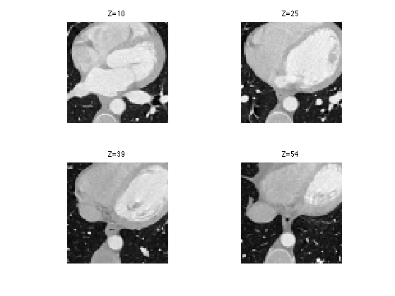
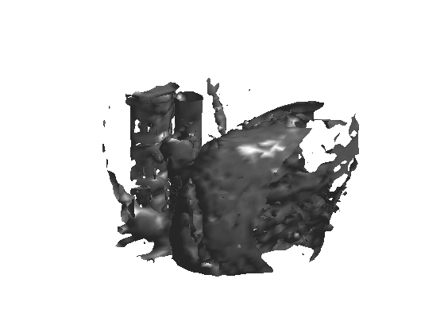
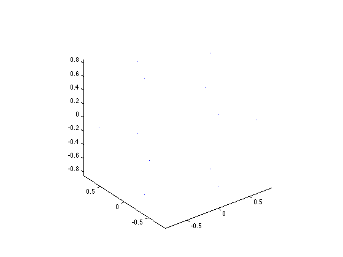
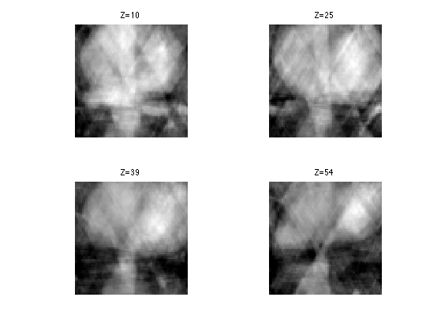
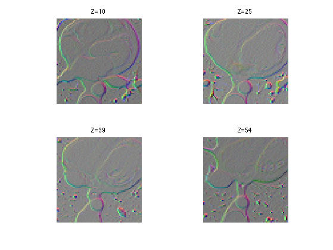
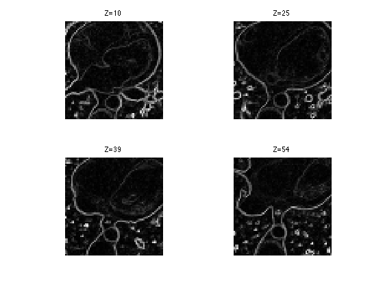
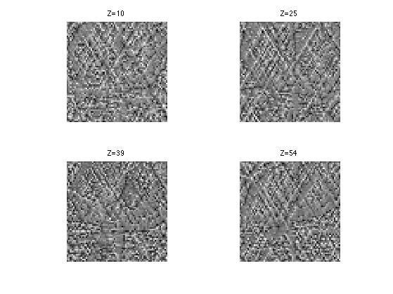
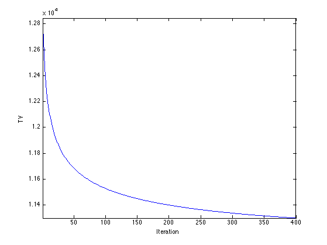
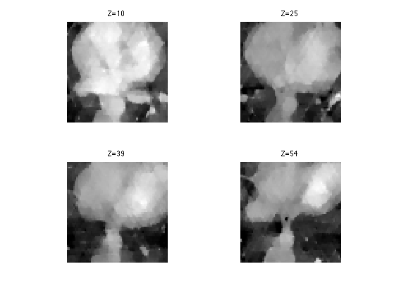

Volumetric Radon Inversion
This numerical tour explores the reconstruction from 3D tomographic measurement with TV regularization.
Contents
Installing toolboxes and setting up the path.
You need to download the following files: signal toolbox and general toolbox.
You need to unzip these toolboxes in your working directory, so that you have toolbox_signal and toolbox_general in your directory.
For Scilab user: you must replace the Matlab comment '%' by its Scilab counterpart '//'.
Recommandation: You should create a text file named for instance numericaltour.sce (in Scilab) or numericaltour.m (in Matlab) to write all the Scilab/Matlab command you want to execute. Then, simply run exec('numericaltour.sce'); (in Scilab) or numericaltour; (in Matlab) to run the commands.
Execute this line only if you are using Matlab.
getd = @(p)path(p,path); % scilab users must *not* execute this
Then you can add the toolboxes to the path.
getd('toolbox_signal/'); getd('toolbox_general/');
3D Volumetric Datasets
We load a volumetric data.
name = 'vessels'; options.nbdims = 3; M = read_bin(name, options); M = rescale(M); % size of the image (here it is a cube). n = size(M,1);
Reduce dimensionality
M = M(1:2:n,1:2:n,1:2:n); n = n/2;
We can display some horizontal slices.
slices = round(linspace(10,n-10,4)); clf; for i=1:length(slices) s = slices(i); imageplot( M(:,:,s), strcat(['Z=' num2str(s)]), 2,2,i ); end
We can display an isosurface of the dataset (here we sub-sample to speed up the computation).
sel = 1:2:n;
clf;
isosurface( M(sel,sel,sel), .5);
axis('off');
 3D Tomograpic Measurements
Tomographic measurements corresponds to the computation of orthogonal projections (integration along liners) of the 3D datasets on set of 2D planes. Thanks to the Fourier-slice theorem, this is equivalent to performing a sub-sampling of the 3D Fourier transform along planes (orthogonal to the projection directions).
Number of projections
P = 12;
Either uniform sampling for P==12, or randomized projection directions, on the sphere.
if P==12 tau = 0.8506508084; one = 0.5257311121; S = [ tau, one, 0; -tau, one, 0 -tau, -one, 0; tau, -one, 0; one, 0 , tau; one, 0 , -tau; -one, 0 , -tau; -one, 0 , tau; 0 , tau, one; 0 , -tau, one; 0 , -tau, -one; 0 , tau, -one ]'; else S = randn(3,P); S = S ./ repmat( sqrt( sum(S.^2,1) ), [3 1]); end
Display the directions on the sphere.
clf; plot3(S(1,:), S(2,:), S(3,:), '.'); axis equal;
The Fourier mask.
x = [0:n/2-1, -n/2:-1]; [X,Y,Z] = ndgrid(x,x,x); mask = zeros(n,n,n); epsilon = .5; for i=1:P q = S(:,i); d = q(1)*X + q(2)*Y + q(3)*Z; mask( abs(d)<=epsilon ) = 1; end
Tomographic measurement can thus be intepreted as a selection of a few Fourier frequencies.
F = fftn(M); y = F(mask==1);
Number of measures.
Q = length(y); disp(strcat(['Number of measurements Q=' num2str(Q) '.'])); disp(strcat(['Sub-sampling Q/N=' num2str(length(y)/n^3,2) '.']));
Number of measurements Q=27906. Sub-sampling Q/N=0.11.
The transposed operator corresponds to the pseudo inverse reconstruction (because the measurement operator is in fact an orthogonal projection). It is similar to the filtered back-projection (excepted that the Fourier sub-sampling is now on a discrete grid, which is not really faithful to the geometry of tomographic acquisition).
F1 = zeros(n,n,n); F1(mask==1) = y; M1 = real( ifftn(F1) );
Display.
clf; for i=1:length(slices) s = slices(i); imageplot( clamp(M1(:,:,s)), strcat(['Z=' num2str(s)]), 2,2,i ); end
SNR of the pseudo inverse reconstruction.
disp(['Pseudo-inverse, SNR=' num2str(snr(M,M1),4) 'dB.']);
Pseudo-inverse, SNR=11.89dB.
3D Total Variation
Since medical images often have a cartoon morphology, it makes sense to perform the reconstruction while minimizing the TV norm of the image.
To be able to use a gradient descent for the reconstruction, we use a smoothed TV-norm, using a smoothing parameter epsilon. The smaller, the closer to TV, but the slower the method is.
epsilon = 1e-2;
The gradient of the volum is a 3D vector field, and hence a (n,n,n,3) matrix.
G = grad(M);
Display the gradient as a color image.
clf; for i=1:length(slices) s = slices(i); imageplot( squeeze(G(:,:,s,:)), strcat(['Z=' num2str(s)]), 2,2,i ); end
Compute the smoothed norm of the gradient. This corresponds to a edge detector.
d = sqrt(sum(G.^2,4)+epsilon^2);
Display.
clf; for i=1:length(slices) s = slices(i); imageplot( squeeze(d(:,:,s,:)), strcat(['Z=' num2str(s)]), 2,2,i ); end
Compute the regularized TV norm.
tv = sum(d(:)); disp(['TV norm=' num2str(tv) '.']);
TV norm=20070.761.
TV Reconstruction from Partial 3D Tomoraphic Measurements
We perform the reconstruction using a projected gradient descent.
Gradient descent step. Should be proportional to epsilon.
tau = epsilon*.2;
Initialize the solution using the pseudo inverse.
Mtv = M1;
The gradient of the smoothed total variation is minus the divergence of the normalized gradient of the image.
G = grad(Mtv); d = sqrt(sum(G.^2,4)+epsilon^2); dG = -div( G ./ repmat(d, [1 1 1 3]) );
Display it.
clf; for i=1:length(slices) s = slices(i); imageplot( dG(:,:,s), strcat(['Z=' num2str(s)]), 2,2,i ); end
Perform the gradient step.
Mtv = Mtv - tau*dG;
Perform the projection step to impose the known values.
F = fftn(Mtv); F(mask==1) = y; Mtv = real(ifftn(F));
Exercice 1: (check the solution) Perform the projected TV gradient desent, and monitor the epsilon-TV norm during the iterations.
exo1;
Display.
clf; for i=1:length(slices) s = slices(i); imageplot( clamp(Mtv(:,:,s)), strcat(['Z=' num2str(s)]), 2,2,i ); end
SNR of the resulting reconstruction.
disp(['Total variation, SNR=' num2str(snr(M,Mtv),4) 'dB.']);
Total variation, SNR=13.94dB.